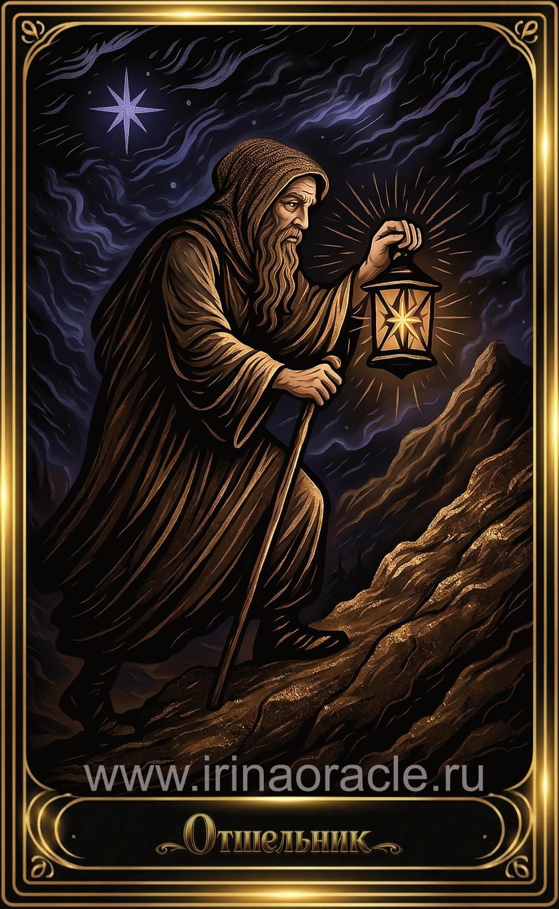

Отшельник — значение карты Таро
Отшельник — значение карты Таро

Отшельник — это архетип мудреца, который ищет истину внутри себя. Он символизирует уединение, глубокое размышление, духовный путь и внутренний свет, который освещает дорогу только на один шаг вперёд. Карта появляется тогда, когда важно замедлиться, прислушаться к себе и найти ответы в тишине.
Общее значение
Отшельник указывает на период самоанализа, поиска смысла и внутренней работы. Это время, когда внешняя активность уступает место размышлениям, а одиночество становится ресурсом, а не проблемой.
Карта говорит о мудрости, зрелости и способности видеть глубже, чем кажется на поверхности.
Любовь и отношения
В любви Отшельник указывает на необходимость паузы, переосмысления, честного взгляда на свои потребности и границы. Иногда — на временную дистанцию или желание побыть одному.
В тени карта может говорить о закрытости, избегании близости или страхе довериться.
Работа и финансы
В работе Отшельник указывает на самостоятельную деятельность, исследования, глубокий анализ или работу, требующую концентрации и уединения. Это время, когда важно не спешить и тщательно продумывать шаги.
В финансах карта говорит о разумной экономии, осторожности и стратегическом подходе.
Здоровье
Отшельник указывает на необходимость отдыха, восстановления, работы с психикой и эмоциональной сферой. Это карта, поддерживающая практики тишины, медитации и уединения.
Иногда она говорит о необходимости консультации специалиста, особенно если человек долго игнорировал своё состояние.
Совет карты
Остановись и прислушайся к себе. Отшельник советует искать ответы внутри, а не во внешнем мире. Это время мудрости, тишины и внутреннего света.
Доверься своему пути — даже если он кажется одиноким.
Теневая сторона
В тени Отшельник проявляется как изоляция, уход от мира, эмоциональная холодность или страх взаимодействия. Иногда — как чрезмерное погружение в себя.
Карта напоминает: уединение полезно, пока оно не превращается в бегство.